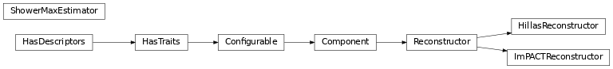

Reconstruction (reco)¶
Introduction¶
ctapipe.reco contains functions and classes to reconstruct physical
shower parameters, using either stereo (multiple images of a shower)
or mono (single telescope) information.
All shower reconstruction algorithms should be subclasses of
Reconstructor which defines some common functionality.
Currently Implemented Algorithms¶
Moment-Based Stereo Reconstruction¶
Moment-base reconstruction uses the moments of each shower image (the Hillas Parameters to estimate the shower axis for each camera, and combines them geometrically to estimate the true shower direction.
The implementation is in the HillasReconstructor class.
Template-Based Stereo Reconstruction¶
Moment-base reconstruction uses the a fit of the full camera images to an expected
image model to find the best fit shower axis, energy and depth of maximum.
The implementation is in the ImPACTReconstructor class.
Reference/API¶
ctapipe.reco Package¶
Classes¶
|
class that reconstructs the direction of an atmospheric shower using a simple hillas parametrisation of the camera images it provides a direction estimate in two steps and an estimate for the shower’s impact position on the ground. |
|
This is the base class from which all direction reconstruction algorithms should inherit from |
|
This class is an implementation if the impact_reco Monte Carlo Template based image fitting method from parsons14. |
|
Class that calculates the height of the shower maximum given a parametrisation of the atmosphere and certain parameters of the shower itself |
Class Inheritance Diagram¶
